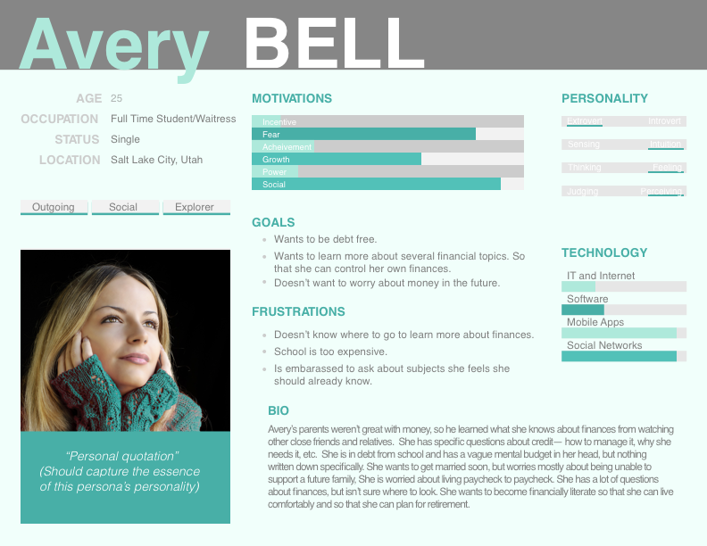
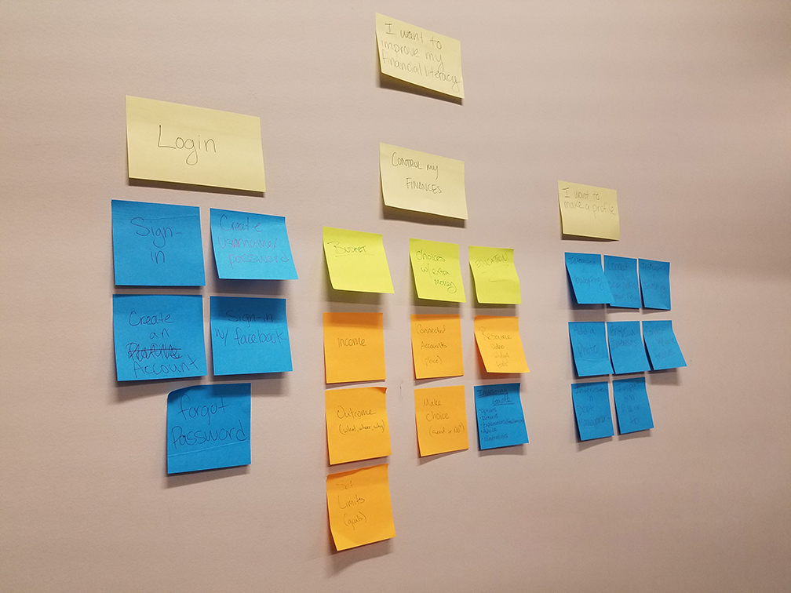
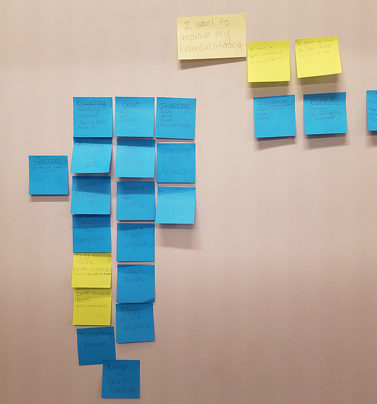
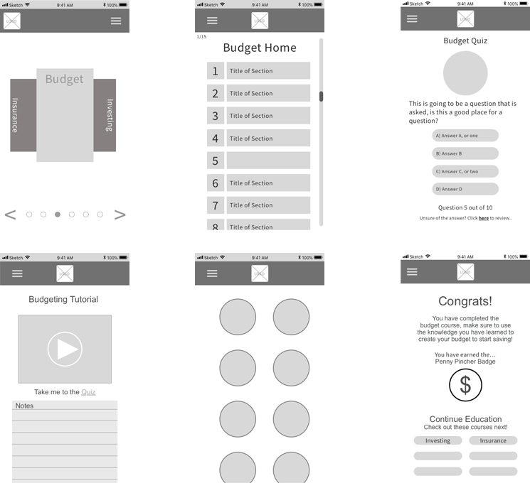
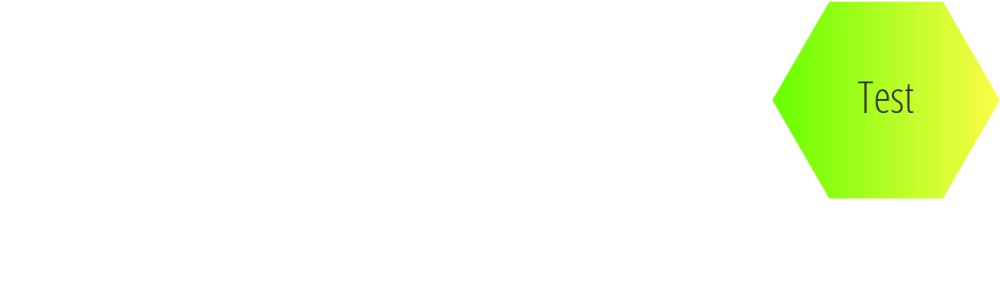
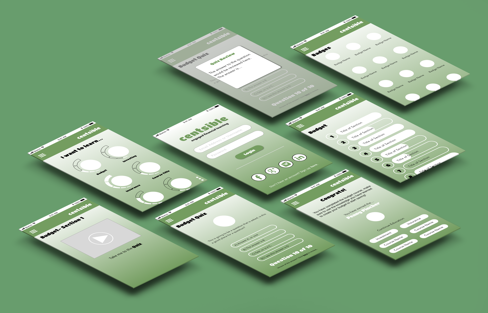

The Challenge
This might start out a little like an infomercial but bear with me. Are you financially literate? Do you know enough in the financial industry to pull your own weight? How can you improve your financial literacy? All are questions that we wanted to ask. Financial literacy is the education and understanding of various financial areas. Topics include: the ability to manage personal finance matters efficiently, the knowledge of making appropriate decisions about personal finance such as investing, insurance, real estate, paying for college, budgeting, retirement, and tax planning.
Based on research data by the Financial Industry Regulatory Authority, 63% of Americans are financially illiterate. Let me say that one more time, 63% of Americans are financially illiterate. This means they lack the basic skills needed to budget correctly, pay their bills, pay off their debt, and plan for retirement. Another survey found the 62% of Americans have $1000 or less saved up, and then 1 out of 5 have nothing saved at all. That's not a stat my group and I wanted. My group and I wanted to try to help our users become more financially literate.
Empathize
To start empathizing with our users we had to first start off with who are users were. Among the 63% that are financially illiterate there are a variety of people and it was too big of a scope to tackle it efficiently that way. While researching debt a little more we found that we wanted to focus ourselves on college aged kids. Mainly those who have recently graduated. With student loans and how crazy expensive an education is we figured that this might be a good place to start. It's at this age where one should be a little more financially literate to start planning for their future and to cut any debt they may have accrued.
To begin our understanding we started with a quick survey of 10 questions. We knew we wouldn't get down to the deep topics through a survey but we thought it would be important to get a basic understanding of how our age group perceived the topic of financial literacy. We posted the survey and got 40 responses. The survey gave my group and I a few good points to go off of and to start preparing our solution to this problem. Through the surveys we wer also able to come up with a list of assumptions to start building up our persona.
- People don't know where to go to find financial help.
- Education doesn't focus the attention on financial planning.
- People may feel as if a savings account is sufficient for their future well-being.
- People don't live within their means.
- People don't prioritize their necessities. Their wants are ahead of their needs.
- People don't see the need for financial planning.
- Financial planning is expensive.
From the survey responses and our assumptions we were able to establish our interview questions. We hoped this would lead us to the root of problems people were facing with financial literacy which would give us a starting point of where to go.
Define
Defining our problem was probably the hardest part of our case study. If I were to start this case study over again I would pay closer attention to this section. Our interviews provided us valuable information though each of us had a different way that we wanted to define our project. We had a couple directions that my group and I debated on going. From the interviews we gathered that people had a tough time budgeting and they didn't have enough resources to learn about financial topics. They had a basic understanding of a few topics, but they didn't excel in a variety of different topics.
We started to build up our persona around these findings so that we could keep in mind our users with the app that we wanted to build. As I mentioned before our group was divided in where we wanted to go with it but ultimately we decided to start with a budgeting app. From the majority of our interviews everyone "budgeted" money but didn't have any specific criteria for it. People merely said "we don't spend more than we have." To me, that wasn't a budget. There were no guidelines being followed and nothing to measure the success of the budget in place. We figured we'd help people prioritize their spending, and show them up front what they had to spend on their necessities.
This was the part of our study that we didn't nail down enough before we started to move on. We moved forward with this shaky foundation and began to ideate around the budgeting app idea we had and how we could solve this problem. This may have not been the best option, but it was a great learning experience in hindsight. This let me know we needed to empathize and analyze a little more to define exactly what our users needs were. We all wanted to solve the same problem in educating our customers but we wanted to do it in our own ways in how we thought was best.

Ideate
Once we defined our users needs, we started to ideate ways in which we could solve our users budgeting so we could educate them and help them to save money.
The 50-20-30 Budget
As mentioned above, the people we interviewed had no specific criteria for their budget. Our goal with the app was to give them what's known as the 50-20-30 budget by default. 50% of their income would be set aside for the essentials, and their bills. This was to help them prioritize what needed to be paid for. 20% of their income would be put towards savings so that they could continually be building the emergency fund and to prepare for their future. The remaining 30% was for personal items. This could be whatever they wanted. This would be tracked and the app would notify them when they were getting close to their limit. These percentages saved could be adjusted according to how our user wanted, but this was the default recommended setting.
Saving the Remainder
Now that we had criteria for a budget there was one thing we wanted to solve, and that was to help them save. The 50-20-30 budget would help them save but our hope was to educate them enough to know they didn't have to spend everything in their personal 30% alotted amount. From our interviews we found that they all believed they were saving because they didn't spend more than they earned. We put this to practice with our remainder saved feature. At the end of their budget stint, we would show how much money they had left over that they didn't spend. With the remaining balance, we gave them the option to send the money to a connected savings account so that they would be saving each time they stayed within their means. Eventually emergency funds and extra cash would accrue in their savings account.
The Pivot
Once we felt like we had the ideas we wanted for our budgeting app we started to wireframe what it might look like. We spent a few days on though we were still a top of our shaky foundation. We had part of our users needs in mind but I would argue that it wasn't in the forefront. Budgeting was one small part of a much larger scene. Together as a group we decided that we had to go back to the define stage as we weren't fixing the real issue our users had.
One of the major frustrations our users had, in which we were ignoring to an extent, was the fact that they didn't have a vast knowledge of many things. They didn't know where to go to find financial help. Education doesn't make financial literacy a top priority. It is rarely taught, they needed somewhere they could go to learn topics they wanted. It was at this point we decided we were only fulfilling a part of our users needs. Our main goal was to give them access to more credible financial information. With this pivot we decided we would focus more on an educational app. A place where they could log on and take a course that they were interested in learning. After better defining what we needed we began to ideate around our newly defined solution.
User Story Map
Once we narrowed down exactly what needed to be done it was time to do our user story map. This was so that we could determine what our minimum viable product would be and we started to build around that. I included both story maps below, before the pivot and after the pivot. We spent a lot of time on a product that wasn't going to be used in it's entirety. There were still parts we would use and teach to our users, but that was no longer our main focus. I included it to show that time was spent on it. Time that could have been saved by understanding our users needs earlier on in the process.
Before
After
Wireframes
So with our new user story map we set out to build wireframes. As to not waste even more time we started with a low fidelity gray scale. We wanted to make sure the functionality of the website was working before taking more time to do the high fidelity mock-ups. It's easy to cut corners after losing time and to think that it might save you time. We knew better and how important each step of the process really is. Below are a few wireframes I came up with for the pages that were needed.
Through testing we found that our 'Home Page' menu needed more thought and attention than we had given it. We needed a way to track course progress so we put a tracker next to icons. Initially we had the menu laid out so that you could only see one course at a time and had to carousel through to see the different courses. (See the first wireframe). We elected to change this to allow the users to see more of what is offered up front without having to dig too deep. This was done with the thought that we might lose our users if the topic they wanted wasn't immediately found.

Prototype
The prototype was built using Marvel. You can interact with it and get a feel for what it would be like to be a user of the Centsible app! We were able to use this design on many of our users and got some more feedback that we can implement on future iterations as this app develops more and more! Try it out!

Test
Due to time restraints we didn't get as much testing on this app that I would have liked but we got valuable feedback as always from our users. Our users loved the social aspect of the app and being able to see what courses your friends are doing and how much experience they are doing. They liked the variety of subjects they could learn from. One of the challenges or concerns that we weren't able to address was the actual content of the educational videos. Our users wanted to ensure that the content would be credible and valuable. With the development of the app this is something that would be focused on as we would want to produce top notch material for our users.

Conclusion
After moving forward with the process and figuring out we were going in the wrong direction I feel as if we addressed the concerns of our users. As mentioned before the vast majority of our interviews addressed the problem that there was so much content out there and they had no where to look. We accomplished this by adding in a number of subjects to the app. Something that can only grow as more subjects are added in as we plan on continually adding more courses to the app. This would be based off demand and suggested material that our users would want to learn along with subjects we see fit. We hope by combining all these subjects into one location and educating them that the 63% of financial illiterate people would decrease.
